G-computation-based transportability analysis
Core Clinical Sciences
transportGC.Rmd#>
#> Attaching package: 'TransportHealth'
#> The following object is masked from 'package:base':
#>
#> truncIntroduction
In this vignette, we demonstrate how to use
TransportHealth for g-computation-based transportability
analysis for instances where individual participant-level data (IPD) is
available in both the original study and target sample, but they are not
mergable.
Brief introduction to g-computation
In transportability and generalizability analysis, g-computation proceeds largely the same as for confounding adjustment.
Firstly, a model of the outcome in terms of the treatment, covariates and effect modifiers is fitted using the source data. Then, this model is used to calculate fitted values of the outcome when treatment is set to control or treatment for all observations in the target data; in particular, observed covariate and effect modifier values in the target data are used to calculate the fitted values. Finally, treatment effects are calculated using these fitted values to obtain an unbiased estimate of the treatment effect in the target population.
Example
Suppose we are interested in estimating the causal effect of a medication on systolic blood pressure in a target population, but we were only able to conduct an observational study using samples from the study population. To obtain unbiased causal effect estimates using the study sample, we account for the following covariates: sex, body fat percentage, and stress level.
We know that the effectiveness of the medication depends on two effect modifiers: 1) stress level, and 2) whether patients are taking another medication.
Note that the covariates adjusted for in the study data can also be effect modifiers.
Coded variables
-
Medication -
med1-
1for treated -
0for untreated
-
Systolic blood pressure (SBP) -
sysBloodPressure(continuous)-
Sex -
sex-
1for male -
0for female
-
Body fat percentage -
percentBodyFat(continuous)-
Stress level -
stress-
1for stressed -
0for normal
-
-
Medication 2 -
med2-
1for treated -
0for untreated
-
Analyses
First, for the implementation of g-computation in
TransportHealthR specifically, the data from the study and
target population should be in separate data frames in the
R environment. The study data should contain response,
treatment, covariate and effect modifier information, while the target
data should contain only covariate and effect modifier information.
Suppose that we have the study and target data separately as follows.
names(testData)
#> [1] "studyData" "targetData"
print("Study data:")
#> [1] "Study data:"
head(testData$studyData)
#> sysBloodPressure med1 sex stress med2 percentBodyFat
#> 1 109.4347 1 1 0 0 16.84868
#> 2 115.9803 0 1 1 0 14.48698
#> 3 112.7886 0 1 0 0 15.53636
#> 4 107.6026 1 1 0 0 13.76442
#> 5 120.6845 0 0 1 0 30.08657
#> 6 113.4424 0 1 0 0 16.23256
print("Target data:")
#> [1] "Target data:"
head(testData$targetData)
#> sex stress med2 percentBodyFat
#> 1 0 1 0 26.12896
#> 2 1 1 0 12.04972
#> 3 1 1 0 12.55972
#> 4 0 0 1 27.07130
#> 5 1 1 0 11.85846
#> 6 0 1 0 27.64520We can now perform transportability analysis using g-computation with
the transportGCPreparedModel and transportGC
functions.
transportGCPreparedModel(outcomeModel,
treatment,
family,
studyData,
wipe)
transportGC(effectType,
preparedModel,
targetData)Arguments for the transportGCPreparedModel and
transportGC functions
The transportGCPreparedModel function requires the
following arguments:
outcomeModel: A formula expressing the outcome model to be fittreatment: The name of the variable indicating treatmentfamily: The type of outcome model to be fit.
This can be any of the families that are used in glm,
one of "coxph","survreg" or
"polr". The "coxph" and "survreg"
options are for survival analysis and will use default options of these
methods from the survival package. The "polr"
option is for ordinal outcomes, and the link function can be specified
by the method argument, which uses the logistic link by
default.
studyData: The source datawipe: A boolean indicating whether to erase the source data in the resultingtransportGCPreparedModelobject
The transportGC function requires the following
arguments:
effectType: A string indicating the type of effect to calculate, such as"meanDiff"for mean difference, `“rr”`` for relative risk, and so on.preparedModel: AtransportGCPreparedModelobject returned by thetransportGCPreparedModelfunctiontargetData: The target data
Specification of transportability analysis
Recall that: - sysBloodPressure is the response
med1is the treatmentsex,percentBodyFat, andstressare covariates to be controlled in the original studymed2(other medication) andstressare effect modifiers of interest.
First, we fit a regression model of the outcome in terms of the
covariates and effect modifiers, making sure to include interaction
terms of the effect modifiers. We need to wrap the results using the
transportGCPreparedModel function to be able to use the
transportGC function, as follows. Note that we only provide
the study data to this function.
preparedModel <- TransportHealth::transportGCPreparedModel(sysBloodPressure ~ med1 + sex + stress + percentBodyFat + med1:stress + med1:med2, # Formula for outcome model
treatment = "med1", # Name of treatment variable
family = gaussian, # Type of model
studyData = testData$studyData, # Study data
wipe = F # Wipe study data from model?
)To estimate the average treatment effect of using the medication on
systolic blood pressure in the target population, we can use the
transportGC function as follows. Note that we only provide
the target data to this function.
result <- TransportHealth::transportGC("meanDiff", # Type of effect estimate (mean difference, relative risk, etc)
preparedModel, # transportGCPreparedModel object
testData$targetData # Target data
)Producing statistical results
To show the results of the analysis, use summary like
you would for lm when fitting a linear model. Using
summary will print out the names of the treatment and
response variables, the transported treatment effect, its estimated
standard error, and a summary of the fitted outcome model. Note that
scientific conclusions should only be drawn from the transported effect
estimate.
summary(result)
#> Response: sysBloodPressure
#> Treatment: med1
#> Effect type: meanDiff
#> ATE estimate: -1.4575638820277
#> Standard error: 0.125829267599943
#> Fitted outcome model:
#>
#> Call:
#> stats::glm(formula = outcomeModel, family = family, data = studyData,
#> model = !wipe)
#>
#> Coefficients:
#> Estimate Std. Error t value Pr(>|t|)
#> (Intercept) 99.9742 0.4449 224.70 <2e-16 ***
#> med11 -4.9526 0.0844 -58.66 <2e-16 ***
#> sex1 5.0582 0.2136 23.68 <2e-16 ***
#> stress1 4.9920 0.0838 59.59 <2e-16 ***
#> percentBodyFat 0.4996 0.0157 31.80 <2e-16 ***
#> med11:stress1 6.9820 0.1299 53.74 <2e-16 ***
#> med10:med21 -0.3776 0.1342 -2.81 0.005 **
#> med11:med21 -5.1624 0.1514 -34.09 <2e-16 ***
#> ---
#> Signif. codes: 0 '***' 0.001 '**' 0.01 '*' 0.05 '.' 0.1 ' ' 1
#>
#> (Dispersion parameter for gaussian family taken to be 0.9692829)
#>
#> Null deviance: 22462.80 on 999 degrees of freedom
#> Residual deviance: 961.53 on 992 degrees of freedom
#> AIC: 2817
#>
#> Number of Fisher Scoring iterations: 2The workflow is constructed in this way to accommodate situations
where the source data and target data cannot be merged due to privacy
concerns. Owners of the source data can apply the
transportGCPreparedModel function to the source data with
wipe = T to erase the source data from the
transportGCPreparedModel object and send this object to the
owners of the target data in an .rds file. Then the owners
of the target data can extract the object to conduct g-computation using
transportGC. See below for a comparison of
transportGCPreparedModel objects with wipe = T
and wipe = F.
preparedModelNoWipe <- TransportHealth::transportGCPreparedModel(sysBloodPressure ~ med1 + sex + stress + percentBodyFat + med1:stress + med1:med2,
treatment = "med1",
family = gaussian,
studyData = testData$studyData,
wipe = F)
write("Components of outcomeModel with wipe = F:", stdout())
#> Components of outcomeModel with wipe = F:
str(preparedModelNoWipe$outcomeModel)
#> List of 30
#> $ coefficients : Named num [1:8] 99.97 -4.95 5.06 4.99 0.5 ...
#> ..- attr(*, "names")= chr [1:8] "(Intercept)" "med11" "sex1" "stress1" ...
#> $ residuals : Named num [1:1000] 0.93743 -1.28172 -0.00575 0.64614 0.68715 ...
#> ..- attr(*, "names")= chr [1:1000] "1" "2" "3" "4" ...
#> $ fitted.values : Named num [1:1000] 108 117 113 107 120 ...
#> ..- attr(*, "names")= chr [1:1000] "1" "2" "3" "4" ...
#> $ effects : Named num [1:1000] -3605.9 -41.9 12.6 120.7 -31.8 ...
#> ..- attr(*, "names")= chr [1:1000] "(Intercept)" "med11" "sex1" "stress1" ...
#> $ R : num [1:8, 1:8] -31.6 0 0 0 0 ...
#> ..- attr(*, "dimnames")=List of 2
#> .. ..$ : chr [1:8] "(Intercept)" "med11" "sex1" "stress1" ...
#> .. ..$ : chr [1:8] "(Intercept)" "med11" "sex1" "stress1" ...
#> $ rank : int 8
#> $ qr :List of 5
#> ..$ qr : num [1:1000, 1:8] -31.6228 0.0316 0.0316 0.0316 0.0316 ...
#> .. ..- attr(*, "dimnames")=List of 2
#> .. .. ..$ : chr [1:1000] "1" "2" "3" "4" ...
#> .. .. ..$ : chr [1:8] "(Intercept)" "med11" "sex1" "stress1" ...
#> ..$ rank : int 8
#> ..$ qraux: num [1:8] 1.03 1.03 1.03 1.03 1.03 ...
#> ..$ pivot: int [1:8] 1 2 3 4 5 6 7 8
#> ..$ tol : num 1e-11
#> ..- attr(*, "class")= chr "qr"
#> $ family :List of 12
#> ..$ family : chr "gaussian"
#> ..$ link : chr "identity"
#> ..$ linkfun :function (mu)
#> ..$ linkinv :function (eta)
#> ..$ variance :function (mu)
#> ..$ dev.resids:function (y, mu, wt)
#> ..$ aic :function (y, n, mu, wt, dev)
#> ..$ mu.eta :function (eta)
#> ..$ initialize: expression({ n <- rep.int(1, nobs) if (is.null(etastart) && is.null(start) && is.null(mustart) && ((family$link| __truncated__
#> ..$ validmu :function (mu)
#> ..$ valideta :function (eta)
#> ..$ dispersion: num NA
#> ..- attr(*, "class")= chr "family"
#> $ linear.predictors: Named num [1:1000] 108 117 113 107 120 ...
#> ..- attr(*, "names")= chr [1:1000] "1" "2" "3" "4" ...
#> $ deviance : num 962
#> $ aic : num 2817
#> $ null.deviance : num 22463
#> $ iter : int 2
#> $ weights : Named num [1:1000] 1 1 1 1 1 1 1 1 1 1 ...
#> ..- attr(*, "names")= chr [1:1000] "1" "2" "3" "4" ...
#> $ prior.weights : Named num [1:1000] 1 1 1 1 1 1 1 1 1 1 ...
#> ..- attr(*, "names")= chr [1:1000] "1" "2" "3" "4" ...
#> $ df.residual : int 992
#> $ df.null : int 999
#> $ y : Named num [1:1000] 109 116 113 108 121 ...
#> ..- attr(*, "names")= chr [1:1000] "1" "2" "3" "4" ...
#> $ converged : logi TRUE
#> $ boundary : logi FALSE
#> $ model :'data.frame': 1000 obs. of 6 variables:
#> ..$ sysBloodPressure: num [1:1000] 109 116 113 108 121 ...
#> ..$ med1 : Factor w/ 2 levels "0","1": 2 1 1 2 1 1 1 2 1 2 ...
#> ..$ sex : Factor w/ 2 levels "0","1": 2 2 2 2 1 2 1 2 1 1 ...
#> ..$ stress : Factor w/ 2 levels "0","1": 1 2 1 1 2 1 2 2 1 2 ...
#> ..$ percentBodyFat : num [1:1000] 16.8 14.5 15.5 13.8 30.1 ...
#> ..$ med2 : Factor w/ 2 levels "0","1": 1 1 1 1 1 1 1 1 1 1 ...
#> ..- attr(*, "terms")=Classes 'terms', 'formula' language sysBloodPressure ~ med1 + sex + stress + percentBodyFat + med1:stress + med1:med2
#> .. .. ..- attr(*, "variables")= language list(sysBloodPressure, med1, sex, stress, percentBodyFat, med2)
#> .. .. ..- attr(*, "factors")= int [1:6, 1:6] 0 1 0 0 0 0 0 0 1 0 ...
#> .. .. .. ..- attr(*, "dimnames")=List of 2
#> .. .. .. .. ..$ : chr [1:6] "sysBloodPressure" "med1" "sex" "stress" ...
#> .. .. .. .. ..$ : chr [1:6] "med1" "sex" "stress" "percentBodyFat" ...
#> .. .. ..- attr(*, "term.labels")= chr [1:6] "med1" "sex" "stress" "percentBodyFat" ...
#> .. .. ..- attr(*, "order")= int [1:6] 1 1 1 1 2 2
#> .. .. ..- attr(*, "intercept")= int 1
#> .. .. ..- attr(*, "response")= int 1
#> .. .. ..- attr(*, ".Environment")=<environment: R_GlobalEnv>
#> .. .. ..- attr(*, "predvars")= language list(sysBloodPressure, med1, sex, stress, percentBodyFat, med2)
#> .. .. ..- attr(*, "dataClasses")= Named chr [1:6] "numeric" "factor" "factor" "factor" ...
#> .. .. .. ..- attr(*, "names")= chr [1:6] "sysBloodPressure" "med1" "sex" "stress" ...
#> $ call : language stats::glm(formula = outcomeModel, family = family, data = studyData, model = !wipe)
#> $ formula :Class 'formula' language sysBloodPressure ~ med1 + sex + stress + percentBodyFat + med1:stress + med1:med2
#> .. ..- attr(*, ".Environment")=<environment: R_GlobalEnv>
#> $ terms :Classes 'terms', 'formula' language sysBloodPressure ~ med1 + sex + stress + percentBodyFat + med1:stress + med1:med2
#> .. ..- attr(*, "variables")= language list(sysBloodPressure, med1, sex, stress, percentBodyFat, med2)
#> .. ..- attr(*, "factors")= int [1:6, 1:6] 0 1 0 0 0 0 0 0 1 0 ...
#> .. .. ..- attr(*, "dimnames")=List of 2
#> .. .. .. ..$ : chr [1:6] "sysBloodPressure" "med1" "sex" "stress" ...
#> .. .. .. ..$ : chr [1:6] "med1" "sex" "stress" "percentBodyFat" ...
#> .. ..- attr(*, "term.labels")= chr [1:6] "med1" "sex" "stress" "percentBodyFat" ...
#> .. ..- attr(*, "order")= int [1:6] 1 1 1 1 2 2
#> .. ..- attr(*, "intercept")= int 1
#> .. ..- attr(*, "response")= int 1
#> .. ..- attr(*, ".Environment")=<environment: R_GlobalEnv>
#> .. ..- attr(*, "predvars")= language list(sysBloodPressure, med1, sex, stress, percentBodyFat, med2)
#> .. ..- attr(*, "dataClasses")= Named chr [1:6] "numeric" "factor" "factor" "factor" ...
#> .. .. ..- attr(*, "names")= chr [1:6] "sysBloodPressure" "med1" "sex" "stress" ...
#> $ data :'data.frame': 1000 obs. of 6 variables:
#> ..$ sysBloodPressure: num [1:1000] 109 116 113 108 121 ...
#> ..$ med1 : Factor w/ 2 levels "0","1": 2 1 1 2 1 1 1 2 1 2 ...
#> ..$ sex : Factor w/ 2 levels "0","1": 2 2 2 2 1 2 1 2 1 1 ...
#> ..$ stress : Factor w/ 2 levels "0","1": 1 2 1 1 2 1 2 2 1 2 ...
#> ..$ med2 : Factor w/ 2 levels "0","1": 1 1 1 1 1 1 1 1 1 1 ...
#> ..$ percentBodyFat : num [1:1000] 16.8 14.5 15.5 13.8 30.1 ...
#> $ offset : NULL
#> $ control :List of 3
#> ..$ epsilon: num 1e-08
#> ..$ maxit : num 25
#> ..$ trace : logi FALSE
#> $ method : chr "glm.fit"
#> $ contrasts :List of 4
#> ..$ med1 : chr "contr.treatment"
#> ..$ sex : chr "contr.treatment"
#> ..$ stress: chr "contr.treatment"
#> ..$ med2 : chr "contr.treatment"
#> $ xlevels :List of 4
#> ..$ med1 : chr [1:2] "0" "1"
#> ..$ sex : chr [1:2] "0" "1"
#> ..$ stress: chr [1:2] "0" "1"
#> ..$ med2 : chr [1:2] "0" "1"
#> - attr(*, "class")= chr [1:2] "glm" "lm"
preparedModelWipe <- TransportHealth::transportGCPreparedModel(sysBloodPressure ~ med1 + sex + stress + percentBodyFat + med1:stress + med1:med2,
treatment = "med1",
family = gaussian,
studyData = testData$studyData,
wipe = T)
write("\n", stdout())
write("Components of outcomeModel with wipe = T:", stdout())
#> Components of outcomeModel with wipe = T:
str(preparedModelWipe$outcomeModel)
#> List of 21
#> $ coefficients : Named num [1:8] 99.97 -4.95 5.06 4.99 0.5 ...
#> ..- attr(*, "names")= chr [1:8] "(Intercept)" "med11" "sex1" "stress1" ...
#> $ effects : Named num [1:1000] -3605.9 -41.9 12.6 120.7 -31.8 ...
#> ..- attr(*, "names")= chr [1:1000] "(Intercept)" "med11" "sex1" "stress1" ...
#> $ R : num [1:8, 1:8] -31.6 0 0 0 0 ...
#> ..- attr(*, "dimnames")=List of 2
#> .. ..$ : chr [1:8] "(Intercept)" "med11" "sex1" "stress1" ...
#> .. ..$ : chr [1:8] "(Intercept)" "med11" "sex1" "stress1" ...
#> $ rank : int 8
#> $ qr :List of 5
#> ..$ qr : num [1:1000, 1:8] -31.6228 0.0316 0.0316 0.0316 0.0316 ...
#> .. ..- attr(*, "dimnames")=List of 2
#> .. .. ..$ : chr [1:1000] "1" "2" "3" "4" ...
#> .. .. ..$ : chr [1:8] "(Intercept)" "med11" "sex1" "stress1" ...
#> ..$ rank : int 8
#> ..$ qraux: num [1:8] 1.03 1.03 1.03 1.03 1.03 ...
#> ..$ pivot: int [1:8] 1 2 3 4 5 6 7 8
#> ..$ tol : num 1e-11
#> ..- attr(*, "class")= chr "qr"
#> $ family :List of 12
#> ..$ family : chr "gaussian"
#> ..$ link : chr "identity"
#> ..$ linkfun :function (mu)
#> ..$ linkinv :function (eta)
#> ..$ variance :function (mu)
#> ..$ dev.resids:function (y, mu, wt)
#> ..$ aic :function (y, n, mu, wt, dev)
#> ..$ mu.eta :function (eta)
#> ..$ initialize: expression({ n <- rep.int(1, nobs) if (is.null(etastart) && is.null(start) && is.null(mustart) && ((family$link| __truncated__
#> ..$ validmu :function (mu)
#> ..$ valideta :function (eta)
#> ..$ dispersion: num NA
#> ..- attr(*, "class")= chr "family"
#> $ deviance : num 962
#> $ aic : num 2817
#> $ null.deviance: num 22463
#> $ iter : int 2
#> $ prior.weights: Named num [1:1000] 1 1 1 1 1 1 1 1 1 1 ...
#> ..- attr(*, "names")= chr [1:1000] "1" "2" "3" "4" ...
#> $ df.residual : int 992
#> $ df.null : int 999
#> $ converged : logi TRUE
#> $ boundary : logi FALSE
#> $ call : language stats::glm(formula = outcomeModel, family = family, data = studyData, model = !wipe)
#> $ formula :Class 'formula' language sysBloodPressure ~ med1 + sex + stress + percentBodyFat + med1:stress + med1:med2
#> .. ..- attr(*, ".Environment")=<environment: R_GlobalEnv>
#> $ terms :Classes 'terms', 'formula' language sysBloodPressure ~ med1 + sex + stress + percentBodyFat + med1:stress + med1:med2
#> .. ..- attr(*, "variables")= language list(sysBloodPressure, med1, sex, stress, percentBodyFat, med2)
#> .. ..- attr(*, "factors")= int [1:6, 1:6] 0 1 0 0 0 0 0 0 1 0 ...
#> .. .. ..- attr(*, "dimnames")=List of 2
#> .. .. .. ..$ : chr [1:6] "sysBloodPressure" "med1" "sex" "stress" ...
#> .. .. .. ..$ : chr [1:6] "med1" "sex" "stress" "percentBodyFat" ...
#> .. ..- attr(*, "term.labels")= chr [1:6] "med1" "sex" "stress" "percentBodyFat" ...
#> .. ..- attr(*, "order")= int [1:6] 1 1 1 1 2 2
#> .. ..- attr(*, "intercept")= int 1
#> .. ..- attr(*, "response")= int 1
#> .. ..- attr(*, ".Environment")=<environment: R_GlobalEnv>
#> .. ..- attr(*, "predvars")= language list(sysBloodPressure, med1, sex, stress, percentBodyFat, med2)
#> .. ..- attr(*, "dataClasses")= Named chr [1:6] "numeric" "factor" "factor" "factor" ...
#> .. .. ..- attr(*, "names")= chr [1:6] "sysBloodPressure" "med1" "sex" "stress" ...
#> $ control :List of 3
#> ..$ epsilon: num 1e-08
#> ..$ maxit : num 25
#> ..$ trace : logi FALSE
#> $ method : chr "glm.fit"
#> $ contrasts :List of 4
#> ..$ med1 : chr "contr.treatment"
#> ..$ sex : chr "contr.treatment"
#> ..$ stress: chr "contr.treatment"
#> ..$ med2 : chr "contr.treatment"
#> - attr(*, "class")= chr [1:2] "glm" "lm"Note that this workflow does not enable the calculation of the
correct variance estimators using bootstrap (which is the approach
transportGC uses) when wipe = T to support
privacy needs. One work around is that the owners of the source data can
resample the source data and provide
transportGCPreparedModel objects for each resample of the
source data, and the owners of the target data can independently
resample the target data and apply transportGC using each
transportGCPreparedModel object to each resampled target
dataset to obtain bootstrap samples of the MSM coefficient
estimates.
To obtain a coefficient plot of estimates, use the plot
function.
plot(result)
One can assess the appropriateness of the outcome model by performing usual diagnostic techniques on the outcome model. For example, we can look at the residual plot of the outcome model.
plot(preparedModel$outcomeModel, which = 1)In our example, the residual plot of the outcome model is
patternless, indicating that it is appropriate. Note that this step
should be done by owners of the study data when the study and target
data cannot be merged, as residuals are also erased in the
transportGCPreparedModel object when
wipe = T.
Like inverse odds of participation weighting (IOPW), the validity of g-computation depends on untestable causal inference assumptions, including stable unit treatment value (SUTVA), conditional exchangeability, positivity and consistency (Ling et al. 2023; Degtiar and Rose 2023). Unlike IOPW, g-computation does not have readily available diagnostics to evaluate if these assumptions are likely to hold or not. For conditional exchangeability, we suggest conducting sensitivity analyses with respect to unmeasured confounding, but this is beyond on the scope of the package. For positivity, a simple method would be to examine marginal distributions of covariates and effect modifiers in the study and target data and compare them: the distributions should overlap between the study and target data, but they do not need to be identical.